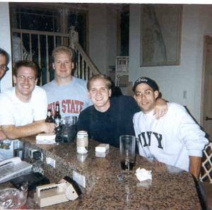
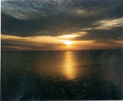
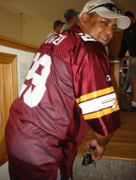

The Seed

The Seed
The HELMETFEST concept was conceived on a sinister, steely night during a well-liquored late night tête-à-tête on August 9th, 1995, between Jonny Irwin and Puck. The SEED was the final beer remaining from a 12-pack of Beast Light.
Despite their inability to form cogent thoughts, Jonny and Puck nonetheless recognized the huge importance of the remaining soldier. Instead of consuming the final beer, the SEED became the sacred symbol of our annual pilgrimage to the Banks that renews our friendships with one another.
Recently published works by sociological archeologists equate the cultural significance of HELMETFEST with historical world-altering events such as Woodstock ‘69, The French-Indian War, Armstrong’s walk on the moon, and the invention of the Ziploc Bag.
Vitals
Name
HelmetFest
Age
21
Birthday
August 9th, 1995
Hometown
Outer Back, NC
Occupation
Unemployed


